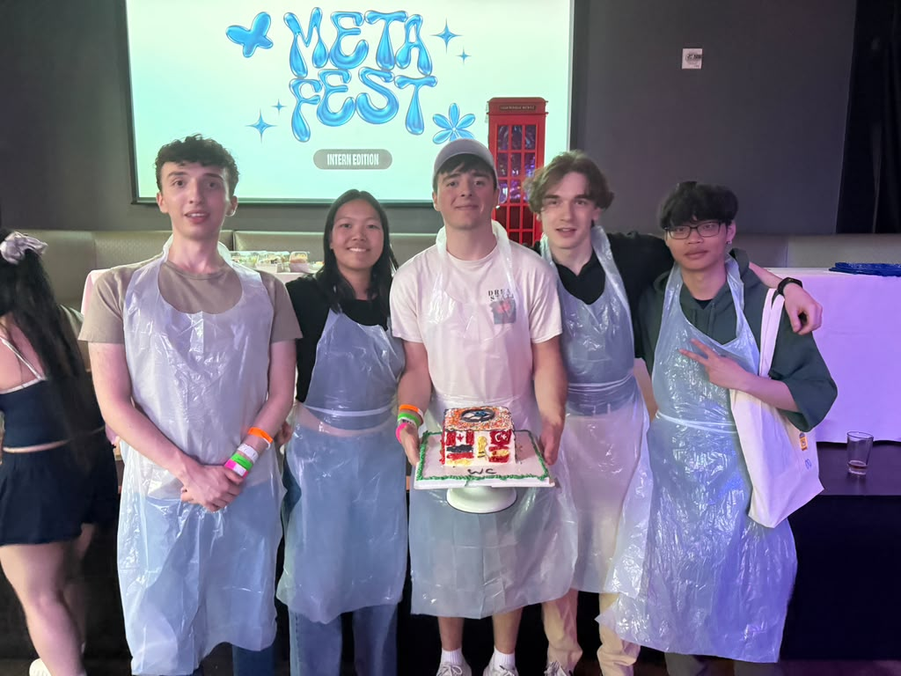
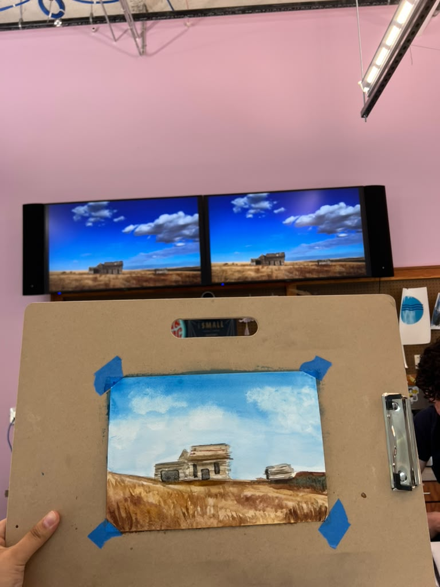
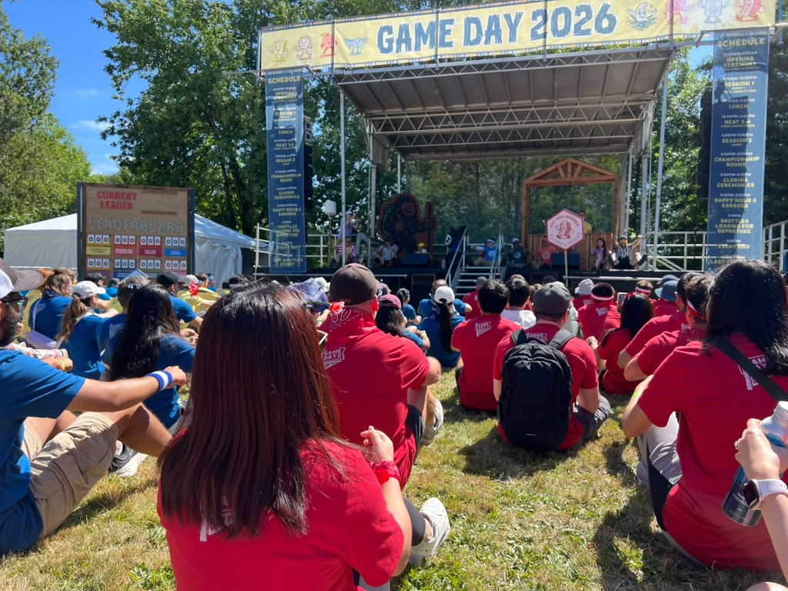
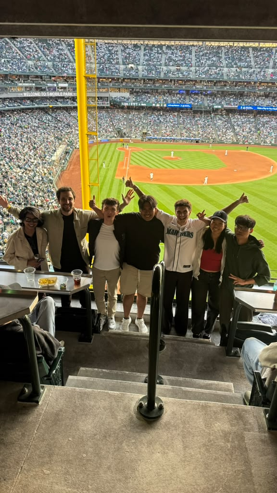
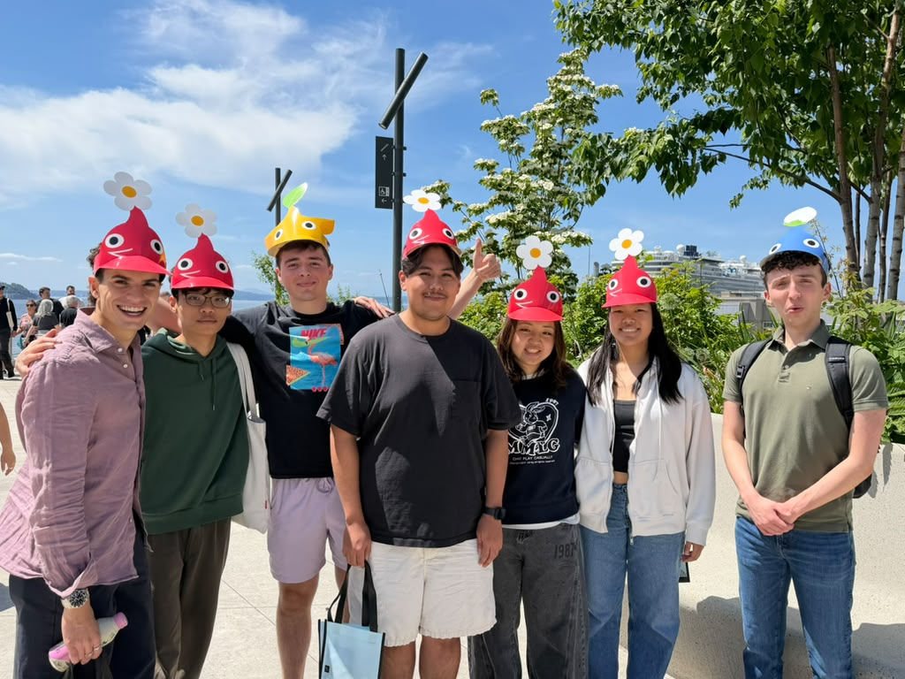
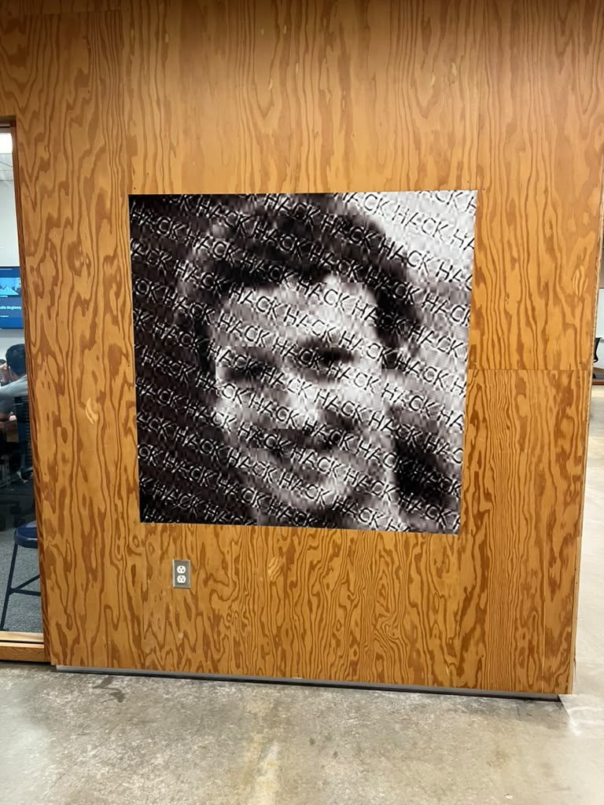
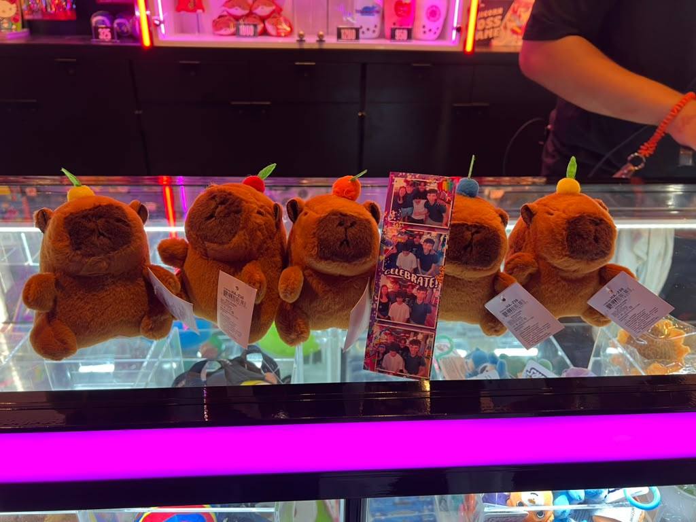
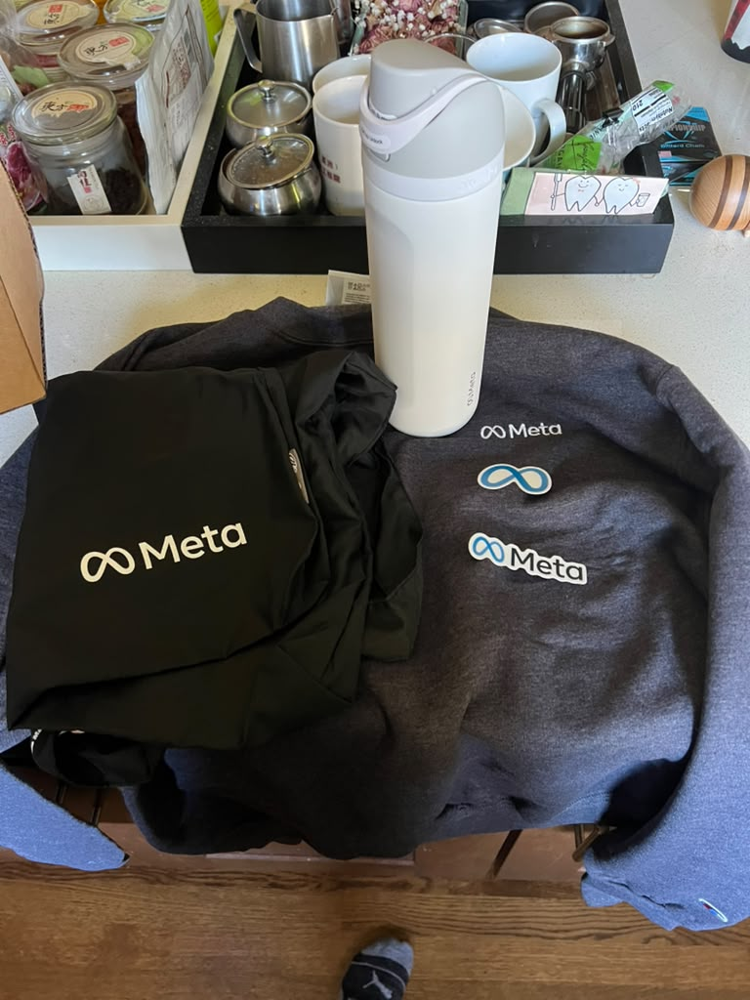

Software Engineer Intern
Meta
Overview
During my summer at Meta, I worked as a Software Engineering Intern on the Ads team, focusing on the mobile browser autofill system across Facebook and Instagram. I worked on a large-scale platform restructuring project that addressed data integrity issues affecting users across billions of browsing sessions. This experience gave me the opportunity to work on a production system at significant scale while gaining a deeper understanding of mobile architecture, cross-platform development, and experimentation.
My main project involved resolving a data integrity bug where form data from one browser tab could leak into and corrupt the state of another tab. I designed and implemented an architectural overhaul across both Android and iOS, replacing a legacy shared singleton state model with isolated per-tab form states. I owned the final phase of this multi-quarter restructuring effort end-to-end, from designing the new architecture and implementing the changes to testing and validating the solution through production experimentation.
While developing and testing the new architecture, I also proactively identified two additional user-facing bugs that were not part of the original project scope. I developed novel multi-tab isolation tests to uncover these issues and worked through their fixes using AI-assisted development to accelerate codebase exploration, implementation, and test generation.
This internship gave me valuable experience working on large-scale production systems and taught me how seemingly small architectural decisions can have significant effects on reliability and user experience. I also gained experience taking ownership of complex projects, navigating unfamiliar codebases, and using experimentation and testing to validate changes before deploying them to millions of users.
What I learned
- How to design and implement changes to large-scale production systems
- How to navigate and contribute to a complex, unfamiliar codebase
- How to reason about state management and architectural tradeoffs across mobile platforms
- How to design effective tests for difficult-to-reproduce, multi-tab bugs
- How to take ownership of a project from system design through production experimentation
- How to effectively use AI-assisted development for codebase exploration, implementation, and test generation
Technologies Used
- Android
- iOS
- Mobile browser infrastructure
- Cross-platform systems
- AI-assisted development
- Production experimentation and testing
Photos
Some highlights from my internship







